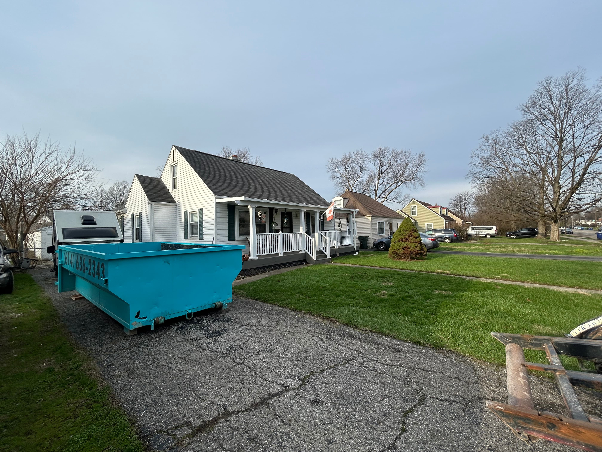

Basement Renovation Debris: Dumpster Rental Essentials
Basement work generates more debris per square foot than almost any other renovation in a home — and more of it is heavy. Whether you're finishing an unfinished space or gutting an existing one down to the concrete, getting your dumpster setup right from the start keeps the job moving and prevents the kind of mid-project scramble that costs time and money.

A contractor in Hilliard called me mid-job. He was three days into a basement gut and had filled a rental unit from another company to the brim — and he still had a full wall of old paneling, a pile of drop ceiling grid, and a concrete pad's worth of broken tile left on the floor. The other company couldn't get another dumpster out for four days.
I had a 20-yard there the next morning.
Basement renovations have a way of generating more debris than anyone plans for, especially when the job involves both demolition and finishing work. The key is sizing correctly before you start, not after you've already run out of space.
Finishing vs. Gut: The Debris Profile Is Completely Different
The type of basement work dictates almost everything about dumpster sizing. These are two very different jobs from a waste standpoint.
Finishing an Unfinished Basement
If you're converting an unfinished space — framing walls, hanging drywall, laying flooring, adding a drop ceiling — the debris is relatively light and manageable. You're dealing with:
- Drywall scraps and cutoffs
- Framing lumber offcuts
- Ceiling tile and grid waste
- Flooring underlayment and packaging
- Miscellaneous construction waste
For a typical finishing job on a 1,000–1,200 sq ft basement, a 14-yard dumpster handles it cleanly. The material is light enough that you're not going to hit the weight limit, and the volume fits without needing to strategize every load. If the space is larger or the scope includes any demo work alongside the finish, step up to a 20-yard.
Gut Renovation or Full Demo
Gutting an existing finished basement is a different story. You're ripping out everything: existing drywall, framing, flooring, drop ceilings, old paneling, and often decades-old insulation. Add in any concrete work — breaking up a section of slab, removing a partition wall, cutting for an egress window — and the weight adds up fast.
For gut renovations, start with a 20-yard. The volume alone will push a 14-yard close to its limit before you're halfway through demo, and if there's any concrete or block involved, you'll hit the weight cap before you hit the volume cap. Two smaller rentals always cost more than one right-sized one.
Weight Is the Variable Most Contractors Underestimate
Standard dumpster rentals include a weight allowance — ours is 4,000 lbs. For light renovation debris, that's plenty. For basement work, it can disappear faster than you expect.
Here's why basement debris is heavier than above-grade renovation work:
Concrete and Masonry
Broken concrete is dense. A single cubic yard of concrete weighs roughly 4,000 lbs on its own — which means a small concrete pour or one section of broken slab can max out a weight allowance before it makes a visible dent in the dumpster's volume. If your scope includes any concrete cutting, slab removal, block wall demo, or foundation patching, call me before you book. We'll talk through whether a standard rental works or whether you need to plan for weight overages.
Tile and Flooring
Ceramic and porcelain tile with the mortar bed underneath is heavier than it looks. A full basement floor's worth of tile removal adds significant weight, especially when it comes up in chunks with the adhesive or thin-set still attached. Carpet and pad are light; tile is not.
Old Plaster and Lathe
Older homes in Upper Arlington, Worthington, and Dublin often have basement walls finished with plaster over lathe rather than drywall. Plaster is substantially heavier than drywall per square foot. If you're demoing plaster walls, treat it more like concrete from a weight planning standpoint.
Basement Sizing at a Glance
14-yard: Finishing an unfinished basement — drywall scraps, framing offcuts, ceiling tile, light flooring waste. Works for most finish-only scopes up to ~1,200 sq ft.
20-yard: Gut renovation, full demo, or any scope involving concrete, tile removal, or plaster walls. Use this whenever you're unsure — one right-sized rental beats two emergency rentals.
Weight caveat: If concrete cutting or slab demo is involved, call first. Weight overages on concrete add up fast and are priced per ton over the included allowance.
The Debris Contractors Miss Until It's In the Dumpster
Basement renovations tend to surface things that weren't on the scope when the job started. Here's what comes up most often:
Old Appliances and Mechanicals
Older furnaces, water heaters, and dehumidifiers frequently get displaced during basement renovations. Some of these can go in a standard dumpster — a dehumidifier, a rusted water heater — but appliances with refrigerants (old AC units, dehumidifiers made before 2010) need to be handled separately. If you find yourself with mechanicals to dispose of, call me before loading them. Most of the time it's not an issue; occasionally it is.
Drop Ceiling Systems
Drop ceilings are almost always present in finished basements from the 1970s through the 1990s. The grid, tiles, and hardware are bulky but light — they take up a lot of volume for their weight. If you're pulling a full drop ceiling in a large basement, budget for the volume. A ceiling grid system across 1,200 sq ft takes up more space than most contractors anticipate when it's piled in pieces.
Old Paneling
Basement paneling from the 1960s–1980s is almost always present in homes across Powell, Hilliard, and Worthington when you're doing a gut. It comes off in full sheets and takes up a disproportionate amount of dumpster space if it's not broken down. Have your crew snap it into smaller pieces as it comes off the wall — it loads faster and fits better.
Flooring
Carpet and pad are light and easy. Old vinyl tile (common in basement utility areas pre-1980) is worth noting — some vintage vinyl floor tile contains asbestos. If you're dealing with pre-1980 floor tile in a home from that era, get it tested before it goes in the dumpster. It's not something you want to find out about after the fact.
What Can't Go in the Dumpster
Most basement renovation debris is fine. A few things that commonly surface in basements are not:
- Old paint cans and solvents — common in basement storage; dispose of at a household hazardous waste facility
- Appliances with refrigerants — need refrigerant recovery before disposal
- Pre-1980 floor tile or ceiling tile — test for asbestos before demolition or disposal
- Propane tanks and fuel containers — take to a proper disposal site
If you're not sure about something, call me before it goes in. I'd rather answer the question than deal with a disposal issue after the fact.
Dumpster Placement for Basement Projects
Basement work almost always means hauling debris up stairs or through a bulkhead and then across the yard or driveway to the dumpster. Placement matters more for basement jobs than for any other project type — every foot of extra distance your crew has to carry material is lost time across a full day of demo.
Put the dumpster as close to the house as the driveway allows. If you have a walkout or bulkhead door, position the dumpster within 15–20 feet of that exit if the driveway layout allows. If the only exit is interior stairs, think about whether a wheelbarrow or contractor cart makes sense to move material in bulk rather than individual trips.
I use driveway protection boards on every drop — the dumpster won't damage your customer's driveway surface. If you need the dumpster on a lawn or gravel area for better access, let me know when you book and I'll plan the placement accordingly.
How Long Do You Need It?
The standard rental includes 3 days. For most basement gut jobs, that's tight but workable if demo is focused. For larger projects, finishing work that happens in stages, or any scope where debris accumulates over a week or more, extensions are available at $15/day.
The most common pattern I see with contractors on basement work: one dumpster for demo (3–4 days), then a second rental when the finishing phase generates its own debris at the end of the job. That's two separate bookings and two separate deliveries — both easy to schedule with a call or online booking whenever you're ready for the next one.
Same-Day Availability for Contractors
Basement demo has a way of accelerating past the original schedule when the crew gets rolling. If you find yourself further along than expected and need a dumpster faster than planned, call me. Same-day delivery is available throughout the Columbus area when you call before 2 PM — Hilliard, Dublin, Powell, Upper Arlington, Worthington, Plain City, and surrounding areas.
If you manage multiple basement jobs or work through a regular renovation cycle, call to set up a standing relationship. Repeat contractors get priority scheduling — I know your timelines are tied to client deadlines and crew availability, and I work around that.
The Bottom Line on Basement Dumpster Rental
The contractor in Hilliard who ran out of space mid-job isn't an unusual story. Basements are underestimated because the square footage looks manageable on paper, but the debris volume — especially when heavy materials are involved — almost always exceeds the first estimate. Size up when you're uncertain, call before loading anything you're not sure about, and plan the dumpster placement before the crew starts pulling things apart.
The job moves faster when debris has somewhere to go. That's the whole point.
Ready to Book for Your Basement Project?
14-yard dumpster: $319 + tax = $344.52 total. Includes delivery, 3 days, 4,000 lbs, pickup, and driveway protection boards. Extensions at $15/day. Same-day delivery available when you call before 2 PM.
- Call to book or talk through sizing: (614) 636-2343
- Book online anytime: Quick online booking available 24/7
- Same-day delivery: Call before 2 PM
Serving Dublin, Hilliard, Powell, Upper Arlington, Worthington, Plain City, and the greater Columbus area.